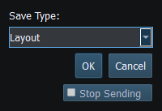
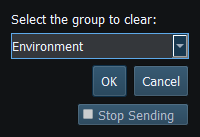
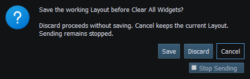

A Layout preserves workspace widgets, canonical values, placement and configuration. It is the right document for returning to a known bench setup or saving a received snapshot for later simulation.
Saving retains values in canonical units and preserves coordinate and measurement precision. Generator Enable/Dispatch and instrument Enable are saved with the Layout. Saving does not enable external Sending.
If a load is cancelled or the document is invalid, keep using the current Layout. After loading, values remain as saved until you edit them or an enabled generator or received message supplies an update. Zero is a valid update where the field permits it.
| Command | Effect |
|---|---|
| Clear Group… | Choose and confirm removal of widgets from one live category |
| Clear All Groups… | Confirm replacing the live workspace with no widgets |
| Delete Saved Layout… | Select a saved document to delete; this is not the same as clearing current widgets |
| Save Layout as Default | Replace the user's Default document after the relevant validation/confirmation |
Captured vessel Layouts are snapshots. Loading one in Generate does not maintain subscriptions to the original boat, fetch its routes or start Autopilot. Do not distribute snapshots containing private identities or positions without review.

Figure 16. Save Layout As uses the live workspace snapshot; saving does not enable Sending. Click to enlarge.

Figure 17. Choose a group, then confirm its removal or Cancel to retain the widgets. Click to enlarge.

Figure 18. Clear All Groups asks before replacing the current workspace. F12 remains available. Click to enlarge.
Main Window · Instruments and Generators · Templates · Property Editor · Object Tree · Themes and Appearance · Keyboard Shortcuts · Connection Troubleshooting · Enable, Dispatch and Sending · Route Overview · Engineering Units